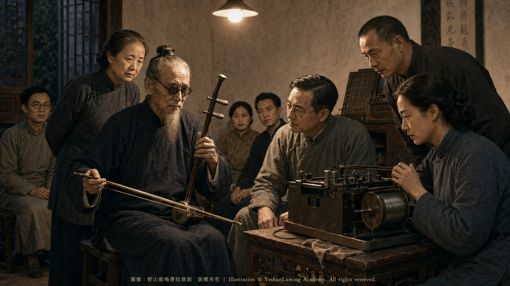

搶救絕響音樂 ·1950年九月的無錫錄音傳奇Rescuing Music on the Verge of Extinction: The Legendary Wuxi Recordings of September 1950
China’s Beethoven · Blind Musician AbingRescuing Music on the Verge of Extinction: The Legendary Wuxi Recordings of September 1950
China’s Beethoven · Blind Musician Abing搶救絕響音樂 ·1950年九月的無錫錄音傳奇
中國的貝多芬·瞎子阿炳
中國的貝多芬·瞎子阿炳（109）China’s Beethoven · Blind Musician Abing (109)
1950年夏天，中央音樂學院民族音樂研究所獲得了一台當時極為罕見的攜帶式鋼絲錄音機。
與今天的磁帶錄音機不同，這種機器把聲音記錄在一卷極細的磁性鋼絲上。它笨重、昂貴，操作也不方便，錄音鋼絲更十分有限。然而在那個還沒有數位錄音、民間藝人的音樂主要依靠口傳心授的年代，這台機器卻可能把一個人的琴聲從死亡手中搶救下來。
楊蔭瀏首先想到的，是故鄉無錫那位已經沉寂多年的民間音樂家——阿炳。
楊蔭瀏並非偶然聽說阿炳的名字。他少年時便與阿炳相識，曾向他請教琵琶和道教音樂，甚至稱阿炳為自己的「琵琶先生」。他深知，這個常年在無錫街頭賣藝的盲人，並不是一個普通的街頭藝人，而是一位有著深厚傳統音樂修養和強烈個人風格的民間音樂家。
黎松壽則是促成這次錄音的重要聯絡人。
他從小住在阿炳附近，與阿炳有近二十年的交往。少年時學習二胡，也曾得到阿炳指點。據黎松壽晚年回憶，1950年，他得知中央音樂學院有了鋼絲錄音機，便把阿炳年老病弱、琴藝可能永遠失傳的情況告訴楊蔭瀏，希望儘快為他錄音。
楊蔭瀏原本也有採錄無錫民間音樂的計畫。於是，搶救阿炳音樂的事情，終於被提上日程。
1950年8月下旬，楊蔭瀏和曹安和從天津回到無錫。
當時，楊蔭瀏是中央音樂學院民族音樂研究所負責人，也是中國傳統音樂研究的重要奠基者；曹安和是琵琶演奏家和民族音樂研究者，同時也是楊蔭瀏長期的學術合作者。兩人帶回無錫的，正是那台珍貴的鋼絲錄音機。
在黎松壽等人陪同下，他們見到了久未正常演奏的阿炳。
1950年夏天，中央音樂學院民族音樂研究所獲得了一台當時極為罕見的攜帶式鋼絲錄音機。
與今天的磁帶錄音機不同，這種機器把聲音記錄在一卷極細的磁性鋼絲上。它笨重、昂貴，操作也不方便，錄音鋼絲更十分有限。然而在那個還沒有數位錄音、民間藝人的音樂主要依靠口傳心授的年代，這台機器卻可能把一個人的琴聲從死亡手中搶救下來。
楊蔭瀏首先想到的，是故鄉無錫那位已經沉寂多年的民間音樂家——阿炳。
楊蔭瀏並非偶然聽說阿炳的名字。他少年時便與阿炳相識，曾向他請教琵琶和道教音樂，甚至稱阿炳為自己的「琵琶先生」。他深知，這個常年在無錫街頭賣藝的盲人，並不是一個普通的街頭藝人，而是一位有著深厚傳統音樂修養和強烈個人風格的民間音樂家。
黎松壽則是促成這次錄音的重要聯絡人。
他從小住在阿炳附近，與阿炳有近二十年的交往。少年時學習二胡，也曾得到阿炳指點。據黎松壽晚年回憶，1950年，他得知中央音樂學院有了鋼絲錄音機，便把阿炳年老病弱、琴藝可能永遠失傳的情況告訴楊蔭瀏，希望儘快為他錄音。
楊蔭瀏原本也有採錄無錫民間音樂的計畫。於是，搶救阿炳音樂的事情，終於被提上日程。
1950年8月下旬，楊蔭瀏和曹安和從天津回到無錫。
當時，楊蔭瀏是中央音樂學院民族音樂研究所負責人，也是中國傳統音樂研究的重要奠基者；曹安和是琵琶演奏家和民族音樂研究者，同時也是楊蔭瀏長期的學術合作者。兩人帶回無錫的，正是那台珍貴的鋼絲錄音機。
在黎松壽等人陪同下，他們見到了久未正常演奏的阿炳。
阿炳的住處十分簡陋，室內家具殘缺，幾乎可以說是家徒四壁。此時的阿炳，身體已經非常衰弱，也有很長一段時間沒有正常賣藝和練琴。
按照一些親歷者的回憶，阿炳原來的二胡因長期擱置，琴皮已被老鼠咬壞，不能再用；他的琵琶也早已不在身邊。
面對專程趕來的楊蔭瀏和曹安和，阿炳既激動，又有些為難。
他坦率地說，自己已經很久沒有好好拉琴，手生了，現在恐怕拉不好，希望先給他幾天時間練習。
楊蔭瀏等人當然理解。
他們從無錫中興樂器店借來一把二胡，曹安和則把自己珍藏的一把老琵琶借給阿炳。阿炳重新安弦、調音，接連練習了幾天，努力找回手指和琴弓的感覺。
這幾天看似短暫，實際上卻是阿炳與命運最後的一次較量。
那些旋律曾經陪伴他走過無錫的大街小巷，陪伴他度過失明、貧困、屈辱和流離的漫長歲月。如今，他必須把深藏在記憶裡的音樂重新喚醒，凝聚在手指和琴弓之上。
根據黎松壽晚年的回憶，正式錄音是在1950年9月2日晚上七點半開始的，地點是無錫公花園附近的三聖閣。
三聖閣當時歸無錫佛教協會使用。黎松壽的岳父曹培靈既是一名牙醫，也在佛教協會任事。為了給錄音尋找一個相對安靜的場所，他熱心地借出了三聖閣內的一個房間。
按照這一版本的記載，當晚共有八人在場。
除了阿炳，還有一直照顧和陪伴他的妻子董催弟。阿炳雙目失明、身體衰弱，董催弟不僅陪他來到錄音地點，也是他晚年生活中最重要的依靠。
楊蔭瀏是這次音樂採錄的主要組織者。他熟悉阿炳的藝術，也明白這些樂曲對中國民族音樂研究的價值。
曹安和帶來並負責照料、操作鋼絲錄音機。她不僅懂得錄音技術，也熟悉琵琶演奏，後來錄製琵琶曲時，阿炳使用的正是她借出的老琵琶。
黎松壽是阿炳的舊識，也是無錫方面的重要聯絡人。正是他在阿炳、楊蔭瀏和曹安和之間奔走聯繫，協助尋找樂器、安排場所。
黎松壽的妻子曹志偉也在場。她熟悉音樂，曾與黎松壽一起為阿炳聽音、記譜和校對，是這場音樂搶救工作中的實際參與者。
曹培靈為錄音提供場所，也是當地熱心支持阿炳音樂的人。錄音完成二十多天後，他主持無錫牙醫協會成立活動，又促成了阿炳一生最後一次公開登臺演出。
祝世匡是熟悉無錫音樂文化的地方音樂人士，後來還曾撰文回憶《二泉映月》的定名經過。他作為這段歷史的見證人，也出現在黎松壽記述的現場名單中。
八個人，一間不大的房間，一位衰弱不堪的盲人藝人，一台在當時極為珍貴的鋼絲錄音機——誰也不知道，他們即將保存下來的，會成為中國音樂史上最珍貴的聲音之一。
錄音機被安放妥當，房間裡漸漸安靜下來。
阿炳端坐在椅子上，手持借來的二胡。當琴弓拉響第一個音符，那段在他心中積澱多年的旋律，終於重新流淌出來。
它並不只是月色和泉水。
那琴聲裡有一個人從少年天才跌落街頭的悲憤，有失明後看不見光明的痛苦，有窮困潦倒、受盡欺凌的屈辱，也有一個民間藝人不肯向命運低頭的尊嚴。
琴聲時而低沉，時而激越，如泣如訴，卻又不是一味哀傷。它彷彿在黑暗中一次次掙扎、追問、反抗，直到把阿炳一生無法說出的話，全部交給了手中的二胡。
鋼絲在錄音機裡緩緩轉動，把這段日後震撼無數聽眾的旋律，一寸一寸地保存下來。
一曲終了，錄音機重新放出了剛才錄下的聲音。
據黎松壽回憶，阿炳聽見自己的琴聲從機器裡傳出來，既驚奇又激動。他摸索著靠近錄音機，招呼董催弟和黎松壽一起聽，反覆說，那確實是自己剛才拉出的聲音。
這可能是阿炳一生第一次從外部真正聽見自己的演奏。
楊蔭瀏問他，這首曲子叫什麼名字。
阿炳起初說，這不過是自己平日在街頭隨手拉出來的曲子，原來並沒有正式名稱。想了一會兒，他提出叫《二泉印月》。
楊蔭瀏認為，「印」字可以改成映照的「映」字，意境更為生動。阿炳欣然同意。
從此，這首經過阿炳多年演奏、不斷變化發展，原本沒有正式名稱的樂曲，有了一個流傳世界的名字：
《二泉映月》。
當晚，依照黎松壽的回憶，阿炳又錄下了《聽松》和《寒春風曲》兩首二胡曲。
《聽松》高亢激越，帶著一種傲然不屈的英雄氣概；《寒春風曲》則深沉蒼涼，彷彿寒風中的生命仍在等待春天。它們與《二泉映月》一起，從不同側面保存了阿炳二胡藝術的精神面貌。

Click to enlarge
第二天，阿炳又使用曹安和借給他的老琵琶，錄下《大浪淘沙》《昭君出塞》和《龍船》三首琵琶曲。
《大浪淘沙》深沉蒼勁，《昭君出塞》悲壯悠遠，《龍船》則熱烈奔放。這三首樂曲證明，阿炳不僅是一位傑出的二胡演奏家，也是一位具有深厚功力的琵琶演奏家。
兩次錄音，最終留下三首二胡曲和三首琵琶曲，共六首珍貴錄音。
但是，關於這次錄音的具體地點和先後次序，親歷者晚年的回憶並不完全一致。
黎松壽回憶，9月2日晚先在三聖閣錄製三首二胡曲，第二天再到曹安和家中錄製三首琵琶曲；曹安和晚年則回憶，錄音是在一個下雨的下午進行，先錄琵琶，後錄二胡。楊蔭瀏的女兒楊國蘭也留下了與三聖閣版本不同的回憶。
時隔多年，這些具體細節已經很難得到完全一致的結論。
然而，有一件事沒有爭議：
1950年初秋，楊蔭瀏、曹安和、黎松壽等人確實使用鋼絲錄音機，保存下了阿炳親自演奏的六首樂曲。無論錄音先後如何，無論其中某些曲目究竟在哪一間房屋裡完成，這六段從死亡邊緣被搶救回來的聲音，都真實地留在了人間。
由於錄音鋼絲和時間有限，加上阿炳的身體已經十分衰弱，這次錄音沒能保存更多曲目。據一些回憶，當時可能還曾錄過其他樂曲，但最終未能保留下來。
參與錄音的人原本希望，等準備好更多錄音鋼絲以後，再為阿炳錄下更多作品。
可是，命運沒有再給他們這樣的機會。
錄音二十多天後，1950年9月25日，阿炳還應邀參加了無錫牙醫協會成立大會的文藝演出。
他登上舞臺，演奏了《龍船》和《二泉映月》等曲目。這是阿炳一生中極為罕見的一次正式登臺，也是他留下記載的最後一次公開演出。
1950年12月4日，距離那次錄音僅僅三個月，阿炳因病在無錫去世，享年57歲。
他終究沒有等到第二次錄音。
假如楊蔭瀏、曹安和、黎松壽等人晚來幾個月，假如沒有那台鋼絲錄音機，假如阿炳因為久未練琴而拒絕演奏，那麼《二泉映月》《聽松》《大浪淘沙》等六首樂曲，便可能隨著阿炳的去世，永遠消失在1950年的冬天。
中國民族音樂史，也將因此失去一個無法彌補的聲音。
這不是一次普通的錄音。
這是一群懂得音樂價值的人，趕在死亡到來以前，從命運手中搶救出來的一份民族記憶。
（未完待續）
In the summer of 1950, the Institute of National Music at the Central Conservatory of Music acquired a portable wire recorder—an extraordinarily rare piece of equipment at the time.
Unlike the tape recorders that came later, this machine recorded sound onto a spool of extremely fine magnetic steel wire. It was heavy, expensive, and difficult to operate, while the supply of recording wire was severely limited. Yet in an age before digital recording, when the music of folk artists was preserved primarily through oral transmission from teacher to student, this machine held the power to rescue a musician’s voice from the hands of death.
The first person who came to Yang Yinliu’s mind was Abing, the folk musician from his hometown of Wuxi who had fallen silent for many years.
Yang Yinliu had not merely heard Abing’s name in passing. He had known Abing since his youth, had once sought his guidance in the pipa and Taoist music, and had even referred to Abing as his “pipa teacher.” He understood that the blind man who had spent so many years performing on the streets of Wuxi was no ordinary street musician, but a folk artist with profound training in traditional music and an intensely individual style.
Li Songshou, meanwhile, was the crucial intermediary who helped bring the recording project into being.
He had grown up near Abing and had known him for nearly twenty years. As a young man learning the erhu, he had also received instruction from Abing. According to Li Songshou’s recollections in his later years, when he learned in 1950 that the Central Conservatory of Music had acquired a wire recorder, he told Yang Yinliu that Abing was old and frail and that his artistry might soon be lost forever. He urged Yang to record him as quickly as possible.
Yang Yinliu had already been planning to collect and record the folk music of Wuxi. At last, the rescue of Abing’s music was formally placed on the agenda.
In late August 1950, Yang Yinliu and Cao Anhe returned to Wuxi from Tianjin.
At the time, Yang Yinliu headed the Institute of National Music at the Central Conservatory of Music and was one of the principal founders of modern Chinese traditional-music scholarship. Cao Anhe was a pipa performer and a scholar of Chinese national music, as well as Yang Yinliu’s longtime academic collaborator. What they brought back to Wuxi was that precious wire recorder.
Accompanied by Li Songshou and others, they met Abing, who had not performed regularly for a long time.
In the summer of 1950, the Institute of National Music at the Central Conservatory of Music acquired a portable wire recorder—an extraordinarily rare piece of equipment at the time.
Unlike the tape recorders that came later, this machine recorded sound onto a spool of extremely fine magnetic steel wire. It was heavy, expensive, and difficult to operate, while the supply of recording wire was severely limited. Yet in an age before digital recording, when the music of folk artists was preserved primarily through oral transmission from teacher to student, this machine held the power to rescue a musician’s voice from the hands of death.
The first person who came to Yang Yinliu’s mind was Abing, the folk musician from his hometown of Wuxi who had fallen silent for many years.
Yang Yinliu had not merely heard Abing’s name in passing. He had known Abing since his youth, had once sought his guidance in the pipa and Taoist music, and had even referred to Abing as his “pipa teacher.” He understood that the blind man who had spent so many years performing on the streets of Wuxi was no ordinary street musician, but a folk artist with profound training in traditional music and an intensely individual style.
Li Songshou, meanwhile, was the crucial intermediary who helped bring the recording project into being.
He had grown up near Abing and had known him for nearly twenty years. As a young man learning the erhu, he had also received instruction from Abing. According to Li Songshou’s recollections in his later years, when he learned in 1950 that the Central Conservatory of Music had acquired a wire recorder, he told Yang Yinliu that Abing was old and frail and that his artistry might soon be lost forever. He urged Yang to record him as quickly as possible.
Yang Yinliu had already been planning to collect and record the folk music of Wuxi. At last, the rescue of Abing’s music was formally placed on the agenda.
In late August 1950, Yang Yinliu and Cao Anhe returned to Wuxi from Tianjin.
At the time, Yang Yinliu headed the Institute of National Music at the Central Conservatory of Music and was one of the principal founders of modern Chinese traditional-music scholarship. Cao Anhe was a pipa performer and a scholar of Chinese national music, as well as Yang Yinliu’s longtime academic collaborator. What they brought back to Wuxi was that precious wire recorder.
Accompanied by Li Songshou and others, they met Abing, who had not performed regularly for a long time.
Abing’s home was extremely humble. Its few pieces of furniture were broken and incomplete, and the place could almost be described as four bare walls. By then, Abing’s health had greatly deteriorated, and he had gone a long time without performing on the streets or practicing his instruments regularly.
According to the recollections of some who lived through those events, Abing’s old erhu had been left unused for so long that mice had gnawed through its snakeskin soundboard, rendering it unplayable; his pipa was no longer with him either.
Confronted by Yang Yinliu and Cao Anhe, who had made the journey especially to see him, Abing was both excited and somewhat embarrassed.
He told them candidly that he had not played properly for a long time, that his hands had grown rusty, and that he was afraid he could no longer play well. He asked them to give him a few days to practice first.
Yang Yinliu and the others naturally understood.
They borrowed an erhu from the Zhongxing Musical Instrument Shop in Wuxi, while Cao Anhe lent Abing a treasured old pipa of her own. Abing restrung and tuned the instruments, then practiced for several days in succession, struggling to recover the feeling in his fingers and bowing arm.
Those few days may have seemed brief, but in truth they were Abing’s final contest with fate.
Those melodies had accompanied him through the streets and alleys of Wuxi. They had remained beside him through the long years of blindness, poverty, humiliation, and displacement. Now he had to awaken the music buried deep in his memory and gather it once more into his fingers and bow.
According to Li Songshou’s recollections in his later years, the formal recording session began at 7:30 on the evening of September 2, 1950, at Sansheng Pavilion near Wuxi Public Garden.
At the time, Sansheng Pavilion was used by the Wuxi Buddhist Association. Li Songshou’s father-in-law, Cao Peiling, was both a dentist and an active member of the association. To provide a relatively quiet place for the recording, he enthusiastically arranged for them to use a room inside the pavilion.
According to this version of events, eight people were present that evening.
Besides Abing, there was his wife, Dong Cuidi, who had long cared for and accompanied him. Blind and physically frail, Abing needed her not only to accompany him to the recording site; she was also the most important source of support in the final years of his life.
Yang Yinliu was the principal organizer of the recording project. He understood Abing’s art and recognized the value these compositions held for the study of Chinese national music.
Cao Anhe brought the wire recorder and was responsible for its care and operation. She understood not only recording technology but also the art of pipa performance. When the pipa pieces were later recorded, Abing played the old instrument she had lent him.
Li Songshou was an old acquaintance of Abing and the principal local coordinator in Wuxi. It was he who traveled back and forth among Abing, Yang Yinliu, and Cao Anhe, helping to locate instruments and arrange a recording venue.
Li Songshou’s wife, Cao Zhiwei, was also present. Musically knowledgeable, she had worked with Li Songshou to listen to Abing’s playing, transcribe his music, and check the resulting scores. She was a practical participant in this effort to rescue Abing’s musical legacy.
Cao Peiling provided the recording venue and was also a local supporter who cared deeply about Abing’s music. A little more than twenty days after the recordings were made, he presided over an event marking the establishment of the Wuxi Dentists Association and helped arrange the final public performance of Abing’s life.
Zhu Shikuang was a local musician familiar with Wuxi’s musical culture. He later wrote about how The Moon Reflected on the Second Spring received its name. As a witness to this episode in history, he also appeared on Li Songshou’s list of those present at the recording session.
Eight people, a small room, a blind musician whose body had been ravaged by illness and hardship, and a wire recorder of extraordinary value in its time—none of them knew that the sounds they were about to preserve would become some of the most precious in the history of Chinese music.
The recorder was carefully set in place, and the room gradually fell silent.
Abing sat upright in a chair, holding the borrowed erhu. As his bow drew out the first note, the melody that had accumulated within him over so many years began to flow once more.
It was not merely about moonlight and spring water.
Within that music was the grief and indignation of a man who had fallen from a gifted youth to a street performer; the anguish of losing his sight and never seeing light again; the humiliation of destitution and relentless abuse; and the dignity of a folk musician who refused to bow his head before fate.
At times the music sank into darkness; at others it surged with passion. It wept and pleaded, yet it was never merely sorrowful. It seemed to struggle, question, and resist again and again within the darkness, until everything Abing had been unable to express throughout his life was entrusted to the erhu in his hands.
The steel wire revolved slowly inside the recorder, preserving inch by inch the melody that would one day move countless listeners.
When the piece ended, the recorder played back what had just been captured.
According to Li Songshou, Abing was astonished and deeply moved when he heard his own erhu emerging from the machine. Feeling his way toward the recorder, he called Dong Cuidi and Li Songshou over to listen and repeatedly exclaimed that it truly was the sound he himself had just played.
This may have been the first time in Abing’s life that he had ever heard his own performance from outside himself.
Yang Yinliu asked him the name of the piece.
At first, Abing replied that it was merely something he had improvised during his years of playing on the streets and that it had never possessed a formal title. After thinking for a moment, he proposed calling it The Moon Imprinted on the Second Spring.
Yang Yinliu suggested replacing the character meaning “imprinted” with the character meaning “reflected,” believing that it would create a more vivid poetic image. Abing readily agreed.
From that moment on, the piece that had evolved and changed through Abing’s many years of performance, and which had previously possessed no formal title, acquired the name by which it would travel around the world:
The Moon Reflected on the Second Spring.
According to Li Songshou’s account, Abing also recorded two other erhu compositions that evening: Listening to the Pines and The Cold Spring Wind.
Listening to the Pines is lofty and impassioned, filled with a proud and unyielding heroic spirit; The Cold Spring Wind is profound and desolate, as though life amid the bitter wind were still waiting for spring. Together with The Moon Reflected on the Second Spring, these pieces preserved different dimensions of the spirit underlying Abing’s erhu artistry.
Click to enlarge
The following day, using the old pipa lent to him by Cao Anhe, Abing recorded three pipa compositions: Great Waves Washing the Sand, Zhaojun Leaving the Frontier, and Dragon Boat.
Great Waves Washing the Sand is profound and vigorous; Zhaojun Leaving the Frontier is tragic, majestic, and far-reaching; while Dragon Boat is exuberant and unrestrained. These three compositions demonstrate that Abing was not only an outstanding erhu performer but also a pipa player of extraordinary depth and accomplishment.
The two recording sessions ultimately preserved three erhu pieces and three pipa pieces—a total of six priceless recordings.
However, the recollections left by the participants in their later years do not fully agree about the exact locations or sequence of these recordings.
Li Songshou recalled that the three erhu pieces were recorded at Sansheng Pavilion on the evening of September 2 and that the three pipa pieces were recorded at Cao Anhe’s home the following day. Cao Anhe, however, later remembered that the session took place on a rainy afternoon, with the pipa pieces recorded first and the erhu pieces afterward. Yang Guolan, the daughter of Yang Yinliu, also left an account that differs from the Sansheng Pavilion version.
After so many years, it has become extremely difficult to reach a single, definitive conclusion about these specific details.
One fact, however, remains beyond dispute:
In the early autumn of 1950, Yang Yinliu, Cao Anhe, Li Songshou, and others used a wire recorder to preserve six pieces performed by Abing himself. Whatever their precise recording sequence, and whichever rooms may have been used for particular compositions, these six sounds—rescued from the edge of death—were truly preserved in the human world.
Because recording wire and time were limited, and because Abing’s health had already become extremely fragile, the sessions could not preserve more of his repertoire. According to some recollections, other pieces may also have been recorded, but they were ultimately lost.
Those involved in the project originally hoped that, once they had obtained more recording wire, they could return and record more of Abing’s music.
But fate gave them no such opportunity.
A little more than twenty days after the recording, on September 25, 1950, Abing was invited to perform at an event celebrating the establishment of the Wuxi Dentists Association.
He appeared onstage and performed Dragon Boat, The Moon Reflected on the Second Spring, and other compositions. It was one of the very few formal stage appearances of Abing’s life and the last documented public performance he ever gave.
On December 4, 1950, only three months after the recordings were made, Abing died of illness in Wuxi at the age of fifty-seven.
He never lived to make a second recording.
Had Yang Yinliu, Cao Anhe, Li Songshou, and the others arrived only a few months later; had there been no wire recorder; or had Abing refused to perform because he had gone so long without practicing, then The Moon Reflected on the Second Spring, Listening to the Pines, Great Waves Washing the Sand, and the other six compositions might have vanished forever with Abing in the winter of 1950.
The history of Chinese national music would have lost a voice that could never be replaced.
This was no ordinary recording session.
It was a piece of a nation’s memory, rescued from the hands of fate by a group of people who understood the value of music—and who reached it just before death arrived.
(To be continued)